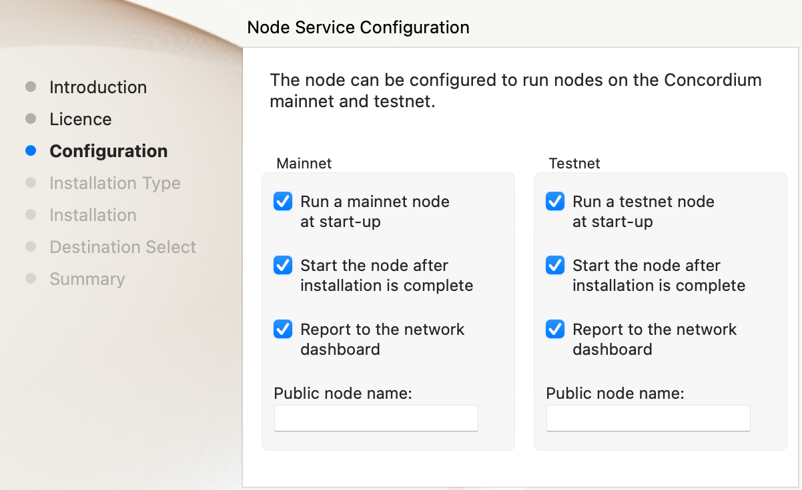

Run and manage a node on macOS#
This guide describes how to run and manage a node on macOS. You can also run a node using Docker, Ubuntu, or Windows.
Prerequisites#
Run macOS 10.14 or later.
Have the administrator password to your computer.
Meet the minimum system requirements for running a node.
Note
Subscribe to the Mainnet status page or Testnet status page and the release information on Discourse to stay informed about updates and changes that may affect you as a node runner, including node software releases and protocol updates.
To subscribe to updates on the Mainnet/Testnet status page click Subscribe to get all updates or click Get updates to choose to get all updates or only updates for specific products.
Install/upgrade and run a node#
Note
Node version 4.5.0 introduced the GRPC V2 interface which is enabled by
default on new installations. However on upgrading an existing node the
configuration is not updated. To enable the new API environment variables
CONCORDIUM_NODE_GRPC2_LISTEN_PORT
CONCORDIUM_NODE_GRPC2_LISTEN_ADDRESS must be set in the node.plist
settings files for the relevant network as documented below. The default
ports set on a fresh install for mainnet and testnet are 20000 and
20001, respectively.
Example for Mainnet
<!-- Address of the GRPC V2 server. -->
<key>CONCORDIUM_NODE_GRPC2_LISTEN_ADDRESS</key>
<string>0.0.0.0</string>
<!-- Port of the GRPC V2 server. -->
<key>CONCORDIUM_NODE_GRPC2_LISTEN_PORT</key>
<string>20000</string>
Example for Testnet
<!-- Address of the GRPC V2 server. -->
<key>CONCORDIUM_NODE_GRPC2_LISTEN_ADDRESS</key>
<string>0.0.0.0</string>
<!-- Port of the GRPC V2 server. -->
<key>CONCORDIUM_NODE_GRPC2_LISTEN_PORT</key>
<string>20001</string>
Note
When upgrading, you can only upgrade one minor version at a time, or from the last release of major version X to major version X+1. You cannot skip versions. For patches, you can skip versions e.g. X.X.0 to X.X.3, or X.1.1 to X.2.3. To download previous node versions, see Previous node versions.
Mainnet
Note
See Change the node startup settings for information about how to change the service configuration settings. See Configure a node as a baker for information about how to set the location of baker credentials.
Go to Downloads, and download the latest macOS installer package (.pkg file).
In the folder where you downloaded the .pkg file, double-click the .pkg file. The Install Concordium Node program opens.
Click Allow to the message saying: This package will run a program to determine if the software can be installed. If you have a M1 based Mac, the installer might ask you to install Rosetta if you haven’t already. Click Install if that’s the case.
If you already have a version of the node installed, click OK to the message saying Previous Installation Detected.
Click Continue on the Introduction page.
Click Continue on the License page, and then Agree to accept the license agreement.
On the Configuration page you have the following options.

Run a [mainnet/testnet] node at start-up: When selected, the node runs when the system starts. Choose this option when you plan to use the node frequently and need it to be up-to-date at short notice. If you don’t select this option, you’ll have to start the node manually when required, for example, when you want to use the Desktop Wallet or Concordium Client. If you choose to start the node manually, it might take longer for the node to get up-to-date with the blockchain depending on when the node was last up-to-date.
Start the node after installation is complete: The node will automatically start running after the installation is complete. Do not choose this option if you want to make further configuration changes before starting the node.
Report to the network dashboard: Select this option if you want to publish your node statistics to the relevant dashboard when the node is running. Deselect this option if you don’t want your node displayed on the dashboard. If selected, you can view the statistics at the mainnet dashboard.
Public node name: Specify the name of your node as you want it to appear on the network dashboard if the node reports to the network dashboard. You must enter a name for at least one of the nodes.
Once configured, click Continue to go to the Installation Type page.
Click Install and enter your administrator password. The installer needs the password because it installs the node for all users and runs it as a system service.
Once installed, click Close. The following helper applications are now available on your computer (you can view them in the LaunchPad or in the /Applications/Concordium Node folder):
Concordium Node Start Mainnet
Concordium Node Stop Mainnet
Testnet
Note
See Change the node startup settings for information about how to change the service configuration settings. See Configure a node as a baker for information about how to set the location of baker credentials.
Go to Downloads, and download the latest macOS installer package (.pkg file).
In the folder where you downloaded the .pkg file, double-click the .pkg file. The Install Concordium Node program opens.
Click Allow to the message saying: This package will run a program to determine if the software can be installed. If you have a M1 based Mac, the installer might ask you to install Rosetta if you haven’t already. Click Install if that’s the case.
If you already have a version of the node installed, click OK to the message saying Previous Installation Detected.
Click Continue on the Introduction page.
Click Continue on the License page, and then Agree to accept the license agreement.
On the Configuration page you have the following options.

Run a [mainnet/testnet] node at start-up: When selected, the node runs when the system starts. Choose this option when you plan to use the node frequently and need it to be up-to-date at short notice. If you don’t select this option, you’ll have to start the node manually when required, for example, when you want to use the Desktop Wallet or Concordium Client. If you choose to start the node manually, it might take longer for the node to get up-to-date with the blockchain depending on when the node was last up-to-date.
Start the node after installation is complete: The node will automatically start running after the installation is complete. Do not choose this option if you want to make further configuration changes before starting the node.
Report to the network dashboard: Select this option if you want to publish your node statistics to the relevant dashboard when the node is running. Deselect this option if you don’t want your node displayed on the dashboard. If selected, you can view the statistics on the testnet dashboard.
Public node name: Specify the name of your node as you want it to appear on the network dashboard if the node reports to the network dashboard. You must enter a name for at least one of the nodes.
Once configured, click Continue to go to the Installation Type page.
Click Install and enter your administrator password. The installer needs the password because it installs the node for all users and runs it as a system service.
Once installed, click Close. The following helper applications are now available on your computer (you can view them in the LaunchPad or in the /Applications/Concordium Node folder):
Concordium Node Start Testnet
Concordium Node Stop Testnet
Verify that the node is running#
The node runs as a background service with no user interface. To verify that it’s running, use the Activity Monitor.
Open the Activity Monitor application from the LaunchPad.
Look at the list and verify that the following is running:
concordium-nodefor each node you are running. For example, if you’re running a node on both testnet and mainnet, you’ll see two instances of concordium-node.node-collectorfor each node that reports to a network dashboard.
If the node is running properly with reporting to the network dashboard enabled, you can see the name of the node on the mainnet dashboard or the testnet dashboard.
Connect a node to the Desktop Wallet#
You can also verify that a node is running by connecting it to the Desktop Wallet.
In the Desktop Wallet, go to Settings, and then select Node settings.
If you’re running the mainnet version of the Desktop Wallet, you must connect to a mainnet node. In the Address field, enter
127.0.0.1and in the Port field enter10000.If you’re running the testnet version of the Desktop Wallet, you must connect to a testnet node. In the Address field, enter
127.0.0.1and in the Port field enter10001.
Select Set connection. If the connection works and the node is running properly, there’s a message saying Successfully connected.
Enable inbound connections#
If you are running your node behind a firewall, or behind your home router, then you will probably only be able to connect to other nodes, but other nodes will not be able to initiate connections to your node. This is perfectly fine, and your node will fully participate in the Concordium network. It will be able to send transactions and, if so configured, to bake and finalize.
However you can also make your node an even better network participant
by enabling inbound connections. By default, concordium-node listens
on port 8888 for inbound connections on Mainnet and on port 8889 for inbound connections on Testnet. Depending on your network and
platform configuration you will either need to forward an external port
to 8888 or 8889 on your router, open it in your firewall, or both. The
details of how this is done will depend on your configuration.
Change the node startup settings#
If you want to change whether the node services start automatically, you have two options.
If you’re not familiar with using a terminal, the easiest option is to reinstall the macOS node and configure it differently.
If you’re familiar with using a terminal, the following options are available:
Run text prefixed with a
$in a terminal.Enable automatic startup of the node by running:
For mainnet:
$sudo ln -s "/Library/Concordium Node/LaunchDaemons/software.concordium.mainnet.node.plist" "/Library/LaunchDaemons/"
For testnet:
$sudo ln -s "/Library/Concordium Node/LaunchDaemons/software.concordium.testnet.node.plist" "/Library/LaunchDaemons/"
Enable automatic startup of the node-collector by running:
For mainnet:
$sudo ln -s "/Library/Concordium Node/LaunchDaemons/software.concordium.mainnet.node-collector.plist" "/Library/LaunchDaemons/"
For testnet:
$sudo ln -s "/Library/Concordium Node/LaunchDaemons/software.concordium.testnet.node-collector.plist" "/Library/LaunchDaemons/"
Disable automatic startup of the node by running:
For mainnet:
$sudo rm "/Library/LaunchDaemons/software.concordium.mainnet.node.plist"
For testnet:
$sudo rm "/Library/LaunchDaemons/software.concordium.testnet.node.plist"
Disable automatic startup of node-collector by running:
For mainnet:
$sudo rm "/Library/LaunchDaemons/software.concordium.mainnet.node-collector.plist"
For testnet:
$sudo rm "/Library/LaunchDaemons/software.concordium.testnet.node-collector.plist"
Configure a node as a baker#
For information about baking on a MacOS node, see Run a baker node on macOS.
View node logs#
There are two ways to view the logs:
With the Console.app you can start recording logs and view them, but you can’t see logs from the past.
Open the Console app, click on the Start button to begin recording logs.
In the search bar, enter the following and press enter:
For mainnet logs:
software.concordium.mainnet.nodeFor testnet logs:
software.conordium.testnet.node
Then click on the small Any button in the search bar and select Subsystem from the list of options.
With a terminal and log show you can view logs from the past and as they are logged.
Open a terminal.
Use the
logcommand by entering:For mainnet logs:
log show --predicate 'subsystem == "software.concordium.mainnet.node"'For testnet logs:
log show --predicate 'subsystem == "software.concordium.testnet.node"'
You can filter the logs with additional parameters, such as start and end date. Enter
log show --helpto see the parameters available.
Synchronize a node with the network#
When you start a node for the first time, it can take a while to synchronize the node with the rest of the network, since it has to get all blocks from its peers.
You can improve the startup time by downloading the blocks from an out-of-band catchup service before starting the node. While it will still take time to process the blocks, it will typically be faster than requesting them from peers.
Note
Catchup data for mainnet does not work with a testnet node and vice versa. Make sure to use the correct URL to the block file index for your node.
Specify the URL to the block file index in the service file:
For mainnet:
Edit
/Library/Concordium Node/LaunchDaemons/software.concordium.mainnet.node.plistas an administrator and add the following in the EnviromentVariables section:<key>CONCORDIUM_NODE_CONSENSUS_DOWNLOAD_BLOCKS_FROM</key> <string>https://catchup.mainnet.concordium.software/blocks.idx</string>
For testnet:
Edit
/Library/Concordium Node/LaunchDaemons/software.concordium.testnet.node.plistas an administrator and add the following in the EnviromentVariables section:<key>CONCORDIUM_NODE_CONSENSUS_DOWNLOAD_BLOCKS_FROM</key> <string>https://catchup.testnet.concordium.com/blocks.idx</string>
Restart the appropriate node by running the application Concordium Node Stop [Mainnet/Testnet] (if running) and then Concordium Node Start [Mainnet/Testnet].
Go to the mainnet or testnet dashboard to monitor when the node has caught up with its peers on the blockchain. You do so by comparing the finalized length of the chain with the length of your node. If they match, your node has caught up.
For node versions 4.3.0 or earlier#
Note
A block file for mainnet does not work with a testnet node and vice versa. Make sure to download the appropriate file for your node.
Download the file with the blocks from the following addresses:
Mainnet: https://catchup.mainnet.concordium.software/blocks_to_import.mdb
Testnet: https://catchup.testnet.concordium.com/blocks_to_import.mdb
The file is downloaded to your default download location.
Move the file to the node’s data folder:
For mainnet:
$sudo cp "/Users/<username>/Downloads/blocks_to_import.mdb" "/Library/Application Support/Concordium Node/Mainnet/Data"
(replacing
<username>with your actual username).For testnet:
$sudo cp "/Users/<username>/Downloads/blocks_to_import.mdb" "/Library/Application Support/Concordium Node/Testnet/Data"
(replacing
<username>with your actual username).
Specify the block file path in the service file:
For mainnet:
Edit
/Library/Concordium Node/LaunchDaemons/software.concordium.mainnet.node.plistas an administrator and add the following in the EnviromentVariables section:<key>CONCORDIUM_NODE_CONSENSUS_IMPORT_BLOCKS_FROM</key> <string>/Library/Application Support/Concordium Node/Mainnet/Data/blocks_to_import.mdb</string>
For testnet:
Edit
/Library/Concordium Node/LaunchDaemons/software.concordium.testnet.node.plistas an administrator and add the following in the EnviromentVariables section:<key>CONCORDIUM_NODE_CONSENSUS_IMPORT_BLOCKS_FROM</key> <string>/Library/Application Support/Concordium Node/Testnet/Data/blocks_to_import.mdb</string>
Restart the appropriate node by running the application Concordium Node Stop [Mainnet/Testnet] (if running) and then Concordium Node Start [Mainnet/Testnet].
Open the appropriate service file again, remove the lines you just added, and then save the file. This ensures that these blocks will not be processed again the next time the node is restarted.
Go to the mainnet or testnet dashboard to monitor when the node has caught up with its peers on the blockchain. You do so by comparing the finalized length of the chain with the length of your node. If they match, your node has caught up.
Uninstall a macOS node#
Press Cmd + Space on your keyboard to open Spotlight Search or click the Spotlight icon in the menu bar.
Search for
Concordium Node Uninstallerand open the application that is found.You now have two options:
To delete the node and keep the data and keys, click Yes.
To delete the node as well as data and keys, click Yes, and delete data. (Make sure to back up your keys beforehand).
 Copyright 2021 - 2022, Concordium Software ApS
Copyright 2021 - 2022, Concordium Software ApS
{kind=link}